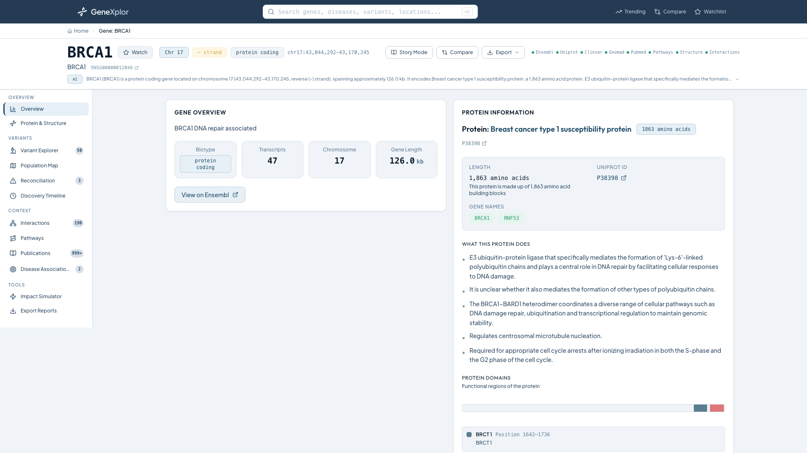

Search any human gene and get a comprehensive dashboard aggregating data from Ensembl, ClinVar, gnomAD, UniProt, PubMed, AlphaFold, STRING, and Reactome — all in one place.

Gene Dashboard
A complete platform for exploring human genes — from variant analysis and 3D protein structures to population genetics, clinical reports, and AI-powered summaries.
Real-time autocomplete with categorized results — search by gene symbol, alias, disease, variant, or chromosomal location. Cmd/Ctrl+K keyboard shortcut.
Comprehensive 12-tab dashboard aggregating data from 8 genomic databases. Each section provides deep analysis with interactive visualizations.
Filterable, sortable, paginated variant table powered by TanStack Table. Clinical significance, consequence types, allele frequency, and linked conditions.
Interactive AlphaFold 3D protein viewer (PDBe Molstar) with confidence coloring and variant mapping. Toggle between cartoon, surface, and ball-and-stick.
Interactive world map showing allele frequency distribution across 9 global populations from the gnomAD database. Compare variants across ethnicities.
Cross-references ClinVar classifications against gnomAD population data to detect conflicts — flagging pathogenic variants that are common in populations.
ACMG-formatted clinical gene reports with configurable sections. Export as PDF, Markdown, or JSON. Filter variants by significance level.
Animated visualization showing mutation cascade: DNA → RNA → Protein → Structure → Function → Clinical outcome. Step-by-step central dogma walkthrough.
Research Pulse tracks publication trends per gene. Trending page ranks genes by momentum. Gene Story mode converts data into a readable narrative.
Explore every screen of the platform — from gene search through variant analysis to clinical report generation.
A clean layered architecture with service separation, two-layer caching, concurrent API aggregation, and containerized deployment.
React 19 + TypeScript + Tailwind CSS 4
Modern SPA with component-based architecture, client-side caching via TanStack Query, and responsive design across all device sizes.
12 analysis tabs with sidebar navigation and URL-based routing
Autocomplete, query parsing, categorized results, keyboard shortcuts
D3 force graph, Recharts, PDBe Molstar 3D, SVG lollipop charts
Compare, Trending, Watchlist, Gene Story, Search Results
PDF/Markdown/JSON/CSV export with clinical report generator
GlassCard, GlowBadge, CountUp, Toast, SkeletonLoader, ScrollReveal
FastAPI + SQLAlchemy 2.0 + Pydantic v2
High-performance async Python API with 20 service modules, concurrent data aggregation, and resilient HTTP clients with retry logic.
Orchestrates parallel API calls to 7+ services, handles partial failures
Gene/alias/disease indexes with query parsing and fuzzy matching
Cross-database conflict detection between ClinVar and gnomAD
ACMG clinical reports with PDF (ReportLab), Markdown, JSON output
LLM-powered gene summaries with template fallback
Publication trend analysis and trending gene rankings
Redis + PostgreSQL + 8 External APIs
Two-layer caching strategy — Redis for 24-hour fast lookups, PostgreSQL for persistent fallback. All external API calls are cached and resilient.
24-hour TTL cache for all aggregated dashboard responses
Persistent JSON blob cache (survives Redis restarts)
4 services with health checks (postgres, redis, backend, frontend)
Enterprise-grade technologies powering every layer — from type-safe React to async Python services and containerized infrastructure.
Component-based UI with hooks
Full type safety across codebase
Utility-first CSS with custom tokens
Composable charting for analytics
Production-ready animations
Client-side tab routing
Data fetching + client cache
Headless table with sort/filter
3D protein structure viewer
Async I/O throughout
Modern async web framework
Async ORM with mapped_column
Data validation & serialization
Resilient HTTP clients with retry
PDF clinical report generation
4-service orchestration
24-hour cache layer (hiredis)
Persistent fallback cache
GeneXplor aggregates data from the world's most trusted genomic databases into a single, unified interface.
Gene coordinates, transcripts, biotype classification, chromosomal location, strand information
rest.ensembl.org
Protein info, functional domains, description, protein length, gene name aliases
rest.uniprot.org
Clinical variants, significance classifications, disease associations, submission timeline
eutils.ncbi.nlm.nih.gov
Population allele frequencies, variant consequences, HGVS notation, allele counts
gnomad.broadinstitute.org
Research publications, abstracts, author lists, journal citations, publication trends
eutils.ncbi.nlm.nih.gov
Predicted 3D protein structures, confidence scores (pLDDT), model versions, structure URLs
alphafold.ebi.ac.uk
Protein-protein interactions, combined scores, experimental/textmining evidence, enrichment terms
string-db.org
Biological pathways, pathway hierarchy, gene counts, categories, sub-events
reactome.org
GeneXplor uses Docker Compose for a one-command setup. All 4 services start with health checks — no manual configuration needed.
# Clone the repository
git clone https://github.com/contact-ajmal/geneXplor.git
cd GeneXplor
# Copy environment file
cp .env.example .env
# Start all services (PostgreSQL, Redis, Backend, Frontend)
docker-compose up
# App available at:
# Frontend → http://localhost:3000
# Backend → http://localhost:8000
# API Docs → http://localhost:8000/docsAll services include health checks. Tables auto-create on first startup. Gene/alias/disease search indexes load in background.
curl http://localhost:8000/gene/TP53Returns aggregated data from all 8 sources: gene info, protein data, clinical variants, allele frequencies, publications, pathways, structure, and interactions.